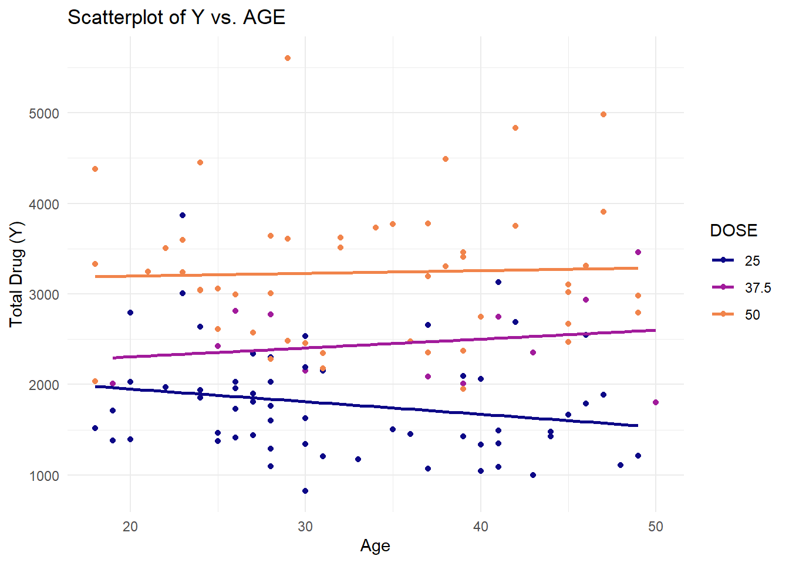

library(readr) #for loading Excel files
library(dplyr) #for data processing/cleaning
library(tidyr) #for data processing/cleaning
library(skimr) #for nice visualization of data
library(here) #to set paths
library(ggplot2) # for plots
library(gtsummary)# for summary tables
library(patchwork) #for combine plots
library(tidymodels)fitting-exercise
This exercise uses the same data as in the exercise 8 with advanced linear modelling techniques. As with exercise 8, a model is fitted to a data set (mavoglurant_A2121_nmpk) from the R package nlmixr2data. First, required packages are installed and loaded.
Setting a random seed during analysis step
rngseed = 1234Data is loaded
# path to data using here function
rawdata <- readr::read_csv("Mavoglurant_A2121_nmpk.csv")Checking the data
#summary(rawdata)
skimr::skim(rawdata)| Name | rawdata |
| Number of rows | 2678 |
| Number of columns | 17 |
| _______________________ | |
| Column type frequency: | |
| numeric | 17 |
| ________________________ | |
| Group variables | None |
Variable type: numeric
| skim_variable | n_missing | complete_rate | mean | sd | p0 | p25 | p50 | p75 | p100 | hist |
|---|---|---|---|---|---|---|---|---|---|---|
| ID | 0 | 1 | 858.81 | 34.08 | 793.00 | 832.00 | 860.00 | 888.00 | 915.00 | ▅▆▇▇▇ |
| CMT | 0 | 1 | 1.93 | 0.26 | 1.00 | 2.00 | 2.00 | 2.00 | 2.00 | ▁▁▁▁▇ |
| EVID | 0 | 1 | 0.07 | 0.26 | 0.00 | 0.00 | 0.00 | 0.00 | 1.00 | ▇▁▁▁▁ |
| EVI2 | 0 | 1 | 0.16 | 0.70 | 0.00 | 0.00 | 0.00 | 0.00 | 4.00 | ▇▁▁▁▁ |
| MDV | 0 | 1 | 0.09 | 0.29 | 0.00 | 0.00 | 0.00 | 0.00 | 1.00 | ▇▁▁▁▁ |
| DV | 0 | 1 | 179.93 | 226.28 | 0.00 | 23.52 | 74.20 | 283.00 | 1730.00 | ▇▂▁▁▁ |
| LNDV | 0 | 1 | 4.08 | 1.88 | 0.00 | 3.16 | 4.31 | 5.64 | 7.46 | ▃▃▇▇▅ |
| AMT | 0 | 1 | 2.76 | 10.32 | 0.00 | 0.00 | 0.00 | 0.00 | 50.00 | ▇▁▁▁▁ |
| TIME | 0 | 1 | 5.85 | 8.91 | 0.00 | 0.58 | 2.25 | 6.36 | 48.22 | ▇▁▁▁▁ |
| DOSE | 0 | 1 | 37.37 | 12.05 | 25.00 | 25.00 | 37.50 | 50.00 | 50.00 | ▇▁▁▁▇ |
| OCC | 0 | 1 | 1.38 | 0.49 | 1.00 | 1.00 | 1.00 | 2.00 | 2.00 | ▇▁▁▁▅ |
| RATE | 0 | 1 | 16.55 | 61.88 | 0.00 | 0.00 | 0.00 | 0.00 | 300.00 | ▇▁▁▁▁ |
| AGE | 0 | 1 | 32.90 | 8.87 | 18.00 | 26.00 | 31.00 | 40.00 | 50.00 | ▆▇▅▅▅ |
| SEX | 0 | 1 | 1.13 | 0.33 | 1.00 | 1.00 | 1.00 | 1.00 | 2.00 | ▇▁▁▁▁ |
| RACE | 0 | 1 | 7.41 | 21.97 | 1.00 | 1.00 | 1.00 | 2.00 | 88.00 | ▇▁▁▁▁ |
| WT | 0 | 1 | 83.16 | 12.48 | 56.60 | 73.30 | 82.60 | 90.60 | 115.30 | ▂▇▇▅▁ |
| HT | 0 | 1 | 1.76 | 0.08 | 1.52 | 1.71 | 1.78 | 1.82 | 1.93 | ▁▃▆▇▃ |
Next, three plots of DV over time stratified by the three Dose levels are created to have a visual inspection of the data. These plots are re-created by grouping the observations by ID following Dr. Handel’s codes in solution to module 8 Exercise.
#exploring data
p1<- rawdata %>% ggplot()+
geom_line(aes(x= TIME, y=DV, group = as.factor(ID), color= as.factor(DOSE))) +
facet_wrap(~DOSE, scales = "free_y")
p1
The lines are not smooth. As informed in the topic, the reason for this could be that some individuals potentially have received the drug more than once, which is indicated by having both entries with OCC=1 and OCC=2. However, in absence of information on the OCC values, the analysis looks into the data set with OCC=1 only. A subset data frame is created keeping only those observations for which OCC has a value of ‘1’
#Creating a sub set of data including observations with OCC=1
dataclean_step1 <- rawdata %>% filter(OCC==1)
#skimr::skim(dataclean_step1)Again, a plot of DV over time stratified by Dose is created.
#p1.1<- dataclean_step1 %>% ggplot()+
# geom_line(aes(x= TIME, y=DV, group = as.factor(ID), color= as.factor(DOSE))) +
# facet_wrap(~DOSE, scales = "free_y")
#p1.1Next, two subsets data frame are created. In the first subset, observations wherein TIME=0 are dropped followed by computation of a variable Y which sums up the DV values for each individual based on ID. This resulted into a data frame of size 120 x 2 containing columns for ID and Y. In the second subset, only those observations are kept for which TIME=0. This second sub set has a size of 120 x 17. Finally these two data subsets are joined to create a new data frame of size 120 x 18.
#Creating a subset excluding the observations with TIME=0
datasubset_1 <- dataclean_step1 %>% filter(TIME != 0) %>%
#Grouping by ID
group_by(ID) %>%
#Creating variable Y, which is sum of the DV variables by ID
dplyr::summarize(Y=sum(DV))
#Creating a subset including only observations with TIME=0
datasubset_2 <- dataclean_step1 %>%
filter(TIME==0)
#Inner joining the two subsets to create a new data frame
data_joined <- left_join(datasubset_1, datasubset_2, by = "ID")
#skimr::skim(data_joined)A final data set is created by keeping only the variables Y, DOSE, AGE, SEX, WT and HT. SEX is coded as factor.
RACE is not included in the data. The original summary shows that RACE has 4 levels. The level 88 of RACE has 8 observations and 7 has 2 observations. In absence of the codebook, it is unclear the reason of naming those levels with numerical values distant from the other two names with top counts.
#sub set of data_joined keeping only the required variables
data_final <- data_joined %>%
select(Y, DOSE, AGE, SEX, WT, HT) %>%
#converting SEX as factors
mutate(across(c(SEX), as.factor))
readr::write_rds(data_final, "mavoglurant.rds")
skimr::skim(data_final)| Name | data_final |
| Number of rows | 120 |
| Number of columns | 6 |
| _______________________ | |
| Column type frequency: | |
| factor | 1 |
| numeric | 5 |
| ________________________ | |
| Group variables | None |
Variable type: factor
| skim_variable | n_missing | complete_rate | ordered | n_unique | top_counts |
|---|---|---|---|---|---|
| SEX | 0 | 1 | FALSE | 2 | 1: 104, 2: 16 |
Variable type: numeric
| skim_variable | n_missing | complete_rate | mean | sd | p0 | p25 | p50 | p75 | p100 | hist |
|---|---|---|---|---|---|---|---|---|---|---|
| Y | 0 | 1 | 2445.41 | 961.64 | 826.43 | 1700.53 | 2349.14 | 3050.22 | 5606.58 | ▆▇▆▂▁ |
| DOSE | 0 | 1 | 36.46 | 11.86 | 25.00 | 25.00 | 37.50 | 50.00 | 50.00 | ▇▁▂▁▆ |
| AGE | 0 | 1 | 33.00 | 8.98 | 18.00 | 26.00 | 31.00 | 40.25 | 50.00 | ▅▇▃▅▅ |
| WT | 0 | 1 | 82.55 | 12.52 | 56.60 | 73.18 | 82.10 | 90.10 | 115.30 | ▂▇▇▅▁ |
| HT | 0 | 1 | 1.76 | 0.09 | 1.52 | 1.70 | 1.77 | 1.81 | 1.93 | ▁▃▆▇▃ |
Exploratory Data Analysis
A table is created for descriptive analysis by Dose.
# Creating a table
table1 <- tbl_summary(
data_final,
by = DOSE, # Stratify summary by DOSE
type = list(
DOSE ~ "categorical", #Specifying DOSE as categorical
SEX ~ "categorical", #Specifying SES as categorical
Y ~ "continuous2",
AGE ~ "continuous2",
WT ~ "continuous2",
HT ~ "continuous2"
),
statistic = list(
all_continuous() ~ c("{mean} ({sd})", "{min}, {max}"), # Statistics for continuous variables
all_categorical() ~ "{n} ({p}%)"), # Statistics for categorical variables
missing = "no" # Option to exclude missing data in summary
)
# Display the table
table1| Characteristic | 25, N = 591 | 37.5, N = 121 | 50, N = 491 |
|---|---|---|---|
| Y | |||
| Mean (SD) | 1,783 (601) | 2,464 (488) | 3,239 (787) |
| Range | 826, 3,866 | 1,801, 3,463 | 1,949, 5,607 |
| AGE | |||
| Mean (SD) | 32 (9) | 36 (10) | 33 (9) |
| Range | 18, 49 | 19, 50 | 18, 49 |
| SEX | |||
| 1 | 49 (83%) | 10 (83%) | 45 (92%) |
| 2 | 10 (17%) | 2 (17%) | 4 (8.2%) |
| WT | |||
| Mean (SD) | 81 (12) | 81 (11) | 84 (13) |
| Range | 58, 111 | 64, 102 | 57, 115 |
| HT | |||
| Mean (SD) | 1.76 (0.09) | 1.75 (0.10) | 1.76 (0.08) |
| Range | 1.56, 1.91 | 1.56, 1.91 | 1.52, 1.93 |
| 1 n (%) | |||
A visual inspection of distribution of continuous variables is performed by plotting histograms.
# Plotting histograms for all continuous variables in a grid
plot1 <-
data_final %>%
select(Y, AGE, WT, HT) %>%
pivot_longer(everything()) %>%
mutate(name = factor(name, levels = c("Y", "AGE", "WT", "HT"))) %>% #Keeps the order of plot
ggplot(aes(x = value, fill = name)) +
geom_histogram(alpha = 0.5, color="black") +
facet_wrap(~name, scales = "free") +
scale_fill_manual(values = c("Y" = "lightgreen", "AGE" = "dodgerblue", "WT" = "grey", "HT" = "salmon")) +
theme_minimal()
plot1
#Saving the figure in the folder
plot1_file <- here("fitting-exercise", "hist_plots.png")
ggsave(filename = plot1_file, plot=plot1, bg="white")Bar charts are plotted for visual inspection of distribution of factor variables. The bar chart indicates smaller representation of Dose 37.5 and Sex level of 2.
#creating a combined plot for DOSE, SEX and RACE. For this plot DOSE is treated as a factor as it has only 3 levels.
plot2 <-
data_final %>%
mutate(DOSE = as.factor(DOSE)) %>% # Convert DOSE to factor here
select(DOSE, SEX) %>%
pivot_longer(everything(), names_to = "name", values_to = "value") %>%
mutate(name = factor(name, levels = c("DOSE", "SEX"))) %>%
ggplot(aes(x = value, fill = name)) +
geom_bar(alpha = 0.5, color = "black") +
facet_wrap(~name, scales = "free") +
scale_fill_manual(values = c("DOSE" = "lightgreen", "SEX" = "salmon"))
plot2
#Saving the figure in the folder
plot2_file <- here("fitting-exercise", "factor_vars_plots.png")
ggsave(filename = plot2_file, plot=plot2, bg="white")Saving 7 x 5 in imageBox plot for distribution of Y by Dose is created.The box plot suggests outlier values of Y for doses 25 and 50.
plot3 <- data_final %>%
mutate(DOSE = as.factor(DOSE)) %>% # Converting DOSE to factor only for the plot
ggplot(aes(x = DOSE, y = Y, fill = DOSE)) +
geom_boxplot() +
labs(title = "Distribution of Y by DOSE", x = "DOSE", y = "Y") +
theme_minimal()
plot3
#Saving the figure in the folder
plot3_file <- here("fitting-exercise", "Y_Dose.png")
ggsave(filename = plot3_file, plot=plot3, bg="white")Saving 7 x 5 in imageNext, Scatter plot is created for Y by Age stratified by Dose. For the dose of 50, the plot indicates a linear increase in Y as Age increases. For the dose of 25, such relationship is negative and for 37.50, the regression line appears comparatively stable.
plot4 <- data_final %>%
mutate(DOSE = as.factor(DOSE)) %>% # Convert DOSE to factor here
ggplot(aes(x = AGE, y = Y, group = DOSE, col = DOSE)) +
geom_point() +
geom_smooth(method = lm, se = FALSE) + # Add a linear regression line
scale_color_viridis_d(option = "plasma", end = .7)+
labs(title = "Scatterplot of Y vs. AGE", x = "Age", y = "Total Drug (Y)") +
theme_minimal()
plot4
#Saving the figure in the folder
plot4_file <- here("fitting-exercise", "Y_Age_Dose.png")
ggsave(filename = plot4_file, plot=plot4, bg="white")Scatter plot is created for Y by HT stratified by Dose. For all the doses the plot indicates a decline in Y as HT increases.
plot5 <- data_final %>%
mutate(DOSE = as.factor(DOSE)) %>% # Convert DOSE to factor here
ggplot(aes(x = HT, y = Y, group = DOSE, col = DOSE)) +
geom_point() +
geom_smooth(method = lm, se = FALSE) + # Add a linear regression line
scale_color_viridis_d(option = "plasma", end = .7)+
labs(title = "Scatterplot of Y vs. HT", x = "HT", y = "Total Drug (Y)") +
theme_minimal()
plot5
#Saving the figure in the folder
plot5_file <- here("fitting-exercise", "Y_HT_Dose.png")
ggsave(filename = plot5_file, plot=plot5, bg="white")Scatter plot is created for Y by WT stratified by Dose. As with Y and HT, a decline in Y is observed as WT decreased for all levels of Dose.
plot6<-data_final %>%
mutate(DOSE = as.factor(DOSE)) %>% # Convert DOSE to factor here
ggplot(aes(x = WT, y = Y, group = DOSE, col = DOSE)) +
geom_point() +
geom_smooth(method = lm, se = FALSE) + # Add a linear regression line
scale_color_viridis_d(option = "plasma", end = .7)+
labs(title = "Scatterplot of Y vs. WT", x = "WT", y = "Total Drug (Y)") +
theme_minimal()
plot6
#Saving the figure in the folder
plot6_file <- here("fitting-exercise", "Y_WT_Dose.png")
ggsave(filename = plot6_file, plot=plot6, bg="white")Visual inspection of correlation between the continuous variables is performed. The scatterplot matrix indicates a linear correlation between WT and HT.
# Using the pairs function for selected variables
plot7 <- pairs(data_final[, c("Y", "AGE", "WT", "HT")],
main = "Pairwise Scatterplot Matrix")
plot7NULL#Saving the figure in the folder
plot7_file <- here("fitting-exercise", "Pair_matrix.png")
ggsave(filename = plot7_file, plot=plot6, bg="white")Saving 7 x 5 in image
`geom_smooth()` using formula = 'y ~ x'MODEL FITTING
The data is randomly splitted into 75% train and 25% test sets following the Data Splitting sectoin of the get Started tidymodels tutorial.Linear model is fitted on the training data. In later part of the exercise the model performance will be measured by applying it on the testing data.
#setting the random seed for reproducibility
set.seed(rngseed)
#Assigning 75% of the data into the training set
data_split <- initial_split(data_final, prop = .75)
#Creating data frames for the train and test data
train_data <- training(data_split)
test_data <- testing(data_split)
#checking the data structure
str(train_data)tibble [90 × 6] (S3: tbl_df/tbl/data.frame)
$ Y : num [1:90] 3004 1347 2772 2028 2353 ...
$ DOSE: num [1:90] 50 25 37.5 25 50 25 25 25 25 37.5 ...
$ AGE : num [1:90] 28 41 28 28 37 30 23 41 48 26 ...
$ SEX : Factor w/ 2 levels "1","2": 1 1 1 2 1 1 1 2 2 1 ...
$ WT : num [1:90] 83.2 81 78.3 58.9 99.1 ...
$ HT : num [1:90] 1.74 1.75 1.72 1.58 1.78 ...str(test_data)tibble [30 × 6] (S3: tbl_df/tbl/data.frame)
$ Y : num [1:30] 2549 2353 2009 2934 2085 ...
$ DOSE: num [1:30] 25 37.5 37.5 37.5 37.5 50 50 50 50 25 ...
$ AGE : num [1:30] 46 43 19 46 37 42 32 47 45 20 ...
$ SEX : Factor w/ 2 levels "1","2": 1 2 1 1 1 2 1 1 1 1 ...
$ WT : num [1:30] 83 64.4 86.1 71.2 102.1 ...
$ HT : num [1:30] 1.78 1.56 1.91 1.67 1.81 ...Linear Model
Two linear models are fitted to the continuous outcome (Y) of the train data, first using only the main predictor of interest DOSE and second using all predictors. A null model is also fitted.
#For reproducibility
set.seed(rngseed)
#Using linear regression function from tidymodels. The default for linear_reg() is "lm" for OLS
lin_mod <- linear_reg() %>% set_engine("lm")
#fitting Y on Dose
linfit_dose1 <- lin_mod%>%fit(Y ~ DOSE, data = train_data)
#Fitting Y on all other variables in the data
linfit_all1 <- lin_mod%>%fit(Y~., data=train_data)
# Fitting a null model using tidymodels' parsnip engine
null_mod <- null_model() %>% set_engine("parsnip") %>% set_mode("regression")
linfit_null1 <- null_mod %>%
fit(Y ~ 1, data = train_data)
#Using tidy for better format of the result table
tidy(linfit_dose1)# A tibble: 2 × 5
term estimate std.error statistic p.value
<chr> <dbl> <dbl> <dbl> <dbl>
1 (Intercept) 535. 244. 2.19 3.08e- 2
2 DOSE 53.4 6.29 8.50 4.41e-13tidy(linfit_all1)# A tibble: 6 × 5
term estimate std.error statistic p.value
<chr> <dbl> <dbl> <dbl> <dbl>
1 (Intercept) 4397. 2170. 2.03 4.59e- 2
2 DOSE 55.3 5.83 9.49 6.09e-15
3 AGE -0.417 9.50 -0.0439 9.65e- 1
4 SEX2 -569. 285. -1.99 4.95e- 2
5 WT -22.6 7.65 -2.96 4.00e- 3
6 HT -1130. 1358. -0.832 4.08e- 1tidy(linfit_null1)# A tibble: 1 × 1
value
<dbl>
1 2509.The results of both the first and second models suggest a positive relationship between the Y and DOSE. The second model suggests that controlling for the effects of other variables, there is a positive relationship of Y with AGE and a negative relation with each of WT and HT. Holding all other variables constant, Y is expected to decrease for a change in SEX variable from 1 to 2.
Next, RMSE metrics are computed for all the models following Dr. Handel’s codes for solutions to module 8 exercise.
#Computing the RMSE for model 1
metrics_dose1 <- linfit_dose1 %>%
predict(train_data) %>%
bind_cols(train_data)%>%
metrics(truth=Y, estimate=.pred)
#Computing the RMSE for model 2
metrics_all1 <- linfit_all1 %>%
predict(train_data) %>%
bind_cols(train_data)%>%
metrics(truth=Y, estimate=.pred)
#Computing the RMSE for model 3
metrics_null1 <- linfit_null1 %>%
predict(train_data) %>%
bind_cols(train_data)%>%
metrics(truth=Y, estimate=.pred)
#print the results
print(metrics_null1)# A tibble: 3 × 3
.metric .estimator .estimate
<chr> <chr> <dbl>
1 rmse standard 948.
2 rsq standard NA
3 mae standard 765.print(metrics_dose1)# A tibble: 3 × 3
.metric .estimator .estimate
<chr> <chr> <dbl>
1 rmse standard 703.
2 rsq standard 0.451
3 mae standard 546. print(metrics_all1)# A tibble: 3 × 3
.metric .estimator .estimate
<chr> <chr> <dbl>
1 rmse standard 627.
2 rsq standard 0.562
3 mae standard 486. The RMSEs are 948, 702 and 627 for the null model, model with only DOSE and model with all the predictors respectively. RMSE measures the average difference between the predicted values from the model and the actual values in the data. A lower RMSE value indicates a better fit to the data. Thus, the linear model containing all predictor variables outperforms the other two models according to the RMSE metrics.
Subsequently, the model performance is computed using cross-validation technique with 10-folds for the two models. This CV technique subsamples the training data 10 times and fits each of the models to the data, wherein 90% of the data is used to fit the model, and 10% to evaluate the model.
#setting the random seed for reproducibility
set.seed(rngseed)
folds <-vfold_cv(train_data, v=10)
folds# 10-fold cross-validation
# A tibble: 10 × 2
splits id
<list> <chr>
1 <split [81/9]> Fold01
2 <split [81/9]> Fold02
3 <split [81/9]> Fold03
4 <split [81/9]> Fold04
5 <split [81/9]> Fold05
6 <split [81/9]> Fold06
7 <split [81/9]> Fold07
8 <split [81/9]> Fold08
9 <split [81/9]> Fold09
10 <split [81/9]> Fold10In the following steps, an object is built for resampling using ‘workflow’ function of tidymodels. The ‘workflow’ function bundles together the pre-processing, modeling, and post-processing requests.
#setting the random seed for reproducibility
set.seed(rngseed)
#Resampling using workflow for the model with only DOSE as predictor
linfit_dose2 <-
workflow() %>%
add_model(lin_mod) %>%
add_formula(Y ~ DOSE)%>%
fit_resamples(folds)
#Resampling using workflowfor for the model with all predictors
linfit_all2 <-
workflow() %>%
add_model(lin_mod) %>%
add_formula(Y ~ .)%>%
fit_resamples(folds)
#extracting the performance statistics results created from the 10 assessment sets.
collect_metrics(linfit_dose2)# A tibble: 2 × 6
.metric .estimator mean n std_err .config
<chr> <chr> <dbl> <int> <dbl> <chr>
1 rmse standard 691. 10 67.5 Preprocessor1_Model1
2 rsq standard 0.512 10 0.0592 Preprocessor1_Model1collect_metrics(linfit_all2)# A tibble: 2 × 6
.metric .estimator mean n std_err .config
<chr> <chr> <dbl> <int> <dbl> <chr>
1 rmse standard 646. 10 64.8 Preprocessor1_Model1
2 rsq standard 0.573 10 0.0686 Preprocessor1_Model1The application of 10-fold CV led to an improvement in the RMSE of the model including only DOSE, reducing it to 690 from 702, which was observed when the training data was utilized without CV. Conversely, the RMSE of the model including all the predictors experienced an increase to 645 with 10-fold CV, compared to 627 without CV.
Unlike the train/test model without CV, the 10-fold CV calculates 10 separate RMSE values for each sample and averages these values. This process introduces some variability among the generated RMSEs. Analysis revealed that the full model exhibits a smaller standard error of 64.81 for RMSE compared to 67.49 of the model that includes only the DOSE predictor.
Finally, the 10-fold CV modelling is performed again to check how different the metric is when using a different seed for randomization.
#setting a different random seed
set.seed(222)
#Assigning 75% of the data into the training set
data_split_new <- initial_split(data_final, prop = .75)
#Creating data frames for the train and test data
train_data_new <- training(data_split_new)
test_data_new <- testing(data_split_new)Preparing the data for 10-fold cross-validation.
#setting a different random seed
set.seed(222)
#Creating 10 random samples of the newly generated training data
folds_new <-vfold_cv(train_data_new, v=10)Using the workflow to compute both the models.
#setting the random seed for reproducibility
set.seed(222)
#Resampling using workflow for the model with only DOSE as predictor
linfit_dose2_new <-
workflow() %>%
add_model(lin_mod) %>%
add_formula(Y ~ DOSE)%>%
fit_resamples(folds_new)
#Resampling using workflowfor for the model with all predictors
linfit_all2_new <-
workflow() %>%
add_model(lin_mod) %>%
add_formula(Y ~ .)%>%
fit_resamples(folds_new)
#extracting the performance statistics results created from the 10 assessment sets.
collect_metrics(linfit_dose2_new)# A tibble: 2 × 6
.metric .estimator mean n std_err .config
<chr> <chr> <dbl> <int> <dbl> <chr>
1 rmse standard 665. 10 67.9 Preprocessor1_Model1
2 rsq standard 0.553 10 0.0608 Preprocessor1_Model1collect_metrics(linfit_all2_new)# A tibble: 2 × 6
.metric .estimator mean n std_err .config
<chr> <chr> <dbl> <int> <dbl> <chr>
1 rmse standard 635. 10 65.4 Preprocessor1_Model1
2 rsq standard 0.600 10 0.0691 Preprocessor1_Model1When a new seed is applied, further reduction is noted in the mean RMSE for the model that included only DOSE as predictor, with value dropping to 664 from the previous seed result of 690.The Standard Error remained relatively unchanged from the previous figure. For the full model, the mean RMSE saw a decrease to 634 with the new seed, down from 648 with the the previous seed. Despite this reduction, the RMSE of the full model still remained higher than that of the full model using the training data without CV.
In summary, the model that included only DOSE, when subjected to 10-fold CV, showed an optimized RMSE compared to the models fitted on the training data without CV. On the other hand, for the full model, a better RMSE is observed when the model is fitted on the training data without CV.